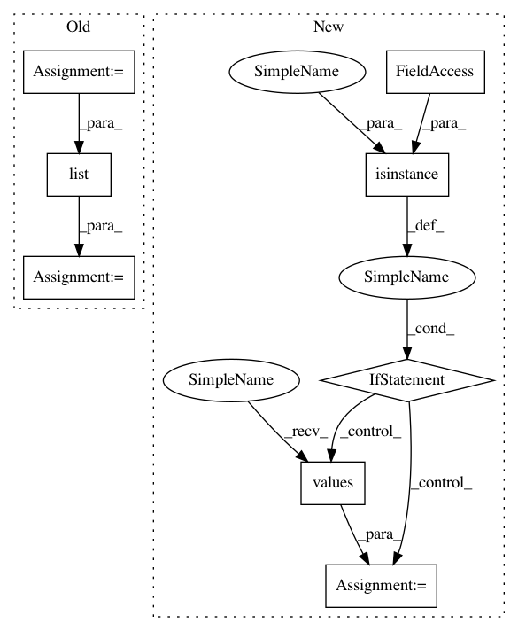

44be9703a0744caf78b8b61319be0db281e91d6a,skopt/space/space.py,Space,from_yaml,#Any#Any#Any#,556
Before Change
dimension_classes = ["Real", "Integer", "Categorical"]
// Extract space options for configuration file
options_name = namespace or list(cfg.keys())[0]
options = cfg if isinstance(cfg, list) else cfg[options_name]
// Populate list with Dimension objects
dimensions = []
After Change
"categorical": Categorical}
// Extract space options for configuration file
if isinstance(config, dict):
if namespace is None:
options = next(iter(config.values()))
else:
options = config[namespace]
elif isinstance(config, list):
options = config
else:
raise TypeError("YaML does not specify a list or dictionary")
// Populate list with Dimension objects
dimensions = []
for option in options:
key = next(iter(option.keys()))
// Make configuration case insensitive
In pattern: SUPERPATTERN
Frequency: 3
Non-data size: 8
Instances
Project Name: scikit-optimize/scikit-optimize
Commit Name: 44be9703a0744caf78b8b61319be0db281e91d6a
Time: 2018-04-06
Author: scott_graham@bose.com
File Name: skopt/space/space.py
Class Name: Space
Method Name: from_yaml
Project Name: catalyst-team/catalyst
Commit Name: aab3902d4a7d55f5a86058854adc36b8a12c873f
Time: 2019-05-20
Author: ekhvedchenya@gmail.com
File Name: catalyst/dl/callbacks/base.py
Class Name: OptimizerCallback
Method Name: on_batch_end